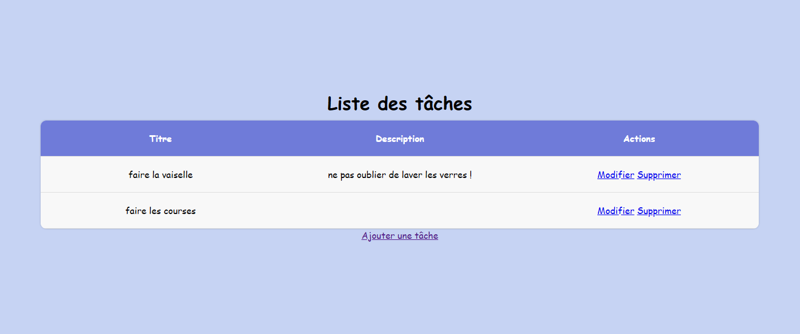

Projet web
HTML/CSS To-Do App
Création d'une TODOList en HTML et CSS, projet de base pour maîtriser la structure et le style des interfaces web.

Liste des tâches en HTML/CSS — vue d'ensemble
Présentation
Application de gestion de tâches réalisée entièrement en HTML et CSS. Ce projet permet d'appréhender la structure sémantique d'une page web et la mise en forme des éléments d'interface, sans JavaScript au départ.
L'objectif était de poser des bases solides sur l'organisation du code HTML, l'utilisation des balises sémantiques et la maîtrise des propriétés CSS pour créer une interface claire et fonctionnelle.

Vue liste
Affichage principal des tâches sous forme de liste verticale, avec une hiérarchie claire entre le titre et les actions.
Zone d'ajout
Zone de saisie dédiée pour créer rapidement une nouvelle tâche et la voir apparaître dans la liste.
État des tâches
Mise en forme visuelle différenciée pour les tâches actives et celles considérées comme terminées.
Compétences développées
Ce projet m'a permis de consolider plusieurs compétences fondamentales du développement web :
HTML sémantique
Utilisation correcte des balises structurelles : header, main, ul, li, form…
CSS layout
Mise en page avec Flexbox, gestion des espacements, des couleurs et des états au survol.
Accessibilité
Bonne pratique des attributs aria et des labels pour les éléments de formulaire.
Technologies & compétences
Bilan personnel
Même si ce projet peut sembler simple, il représente une étape essentielle dans l'apprentissage du développement web. Maîtriser la structure HTML et le style CSS avant d'aborder JavaScript permet de comprendre les fondations sur lesquelles reposent toutes les interfaces modernes. Ce projet m'a donné la rigueur nécessaire pour écrire un code propre, lisible et bien organisé.